"AI will not replace humans.
Humans with AI will replace
humans without AI."
— Karim Lakhani, Harvard Business School
The Birth of Distributed Intelligence
A Code & Bourbon Production · February 2026
The 8 Stages
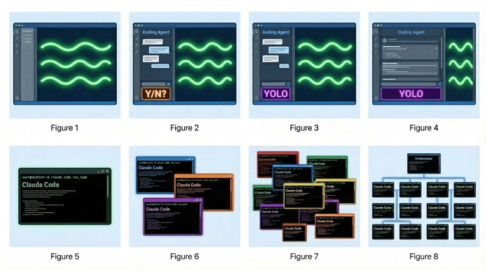
The Curve
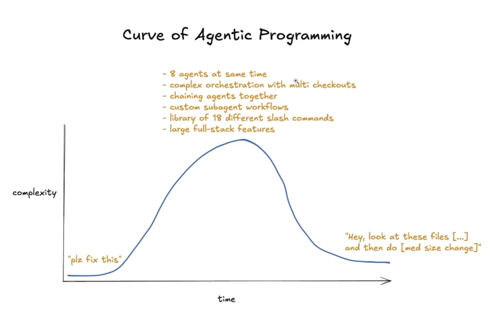
Gustavo

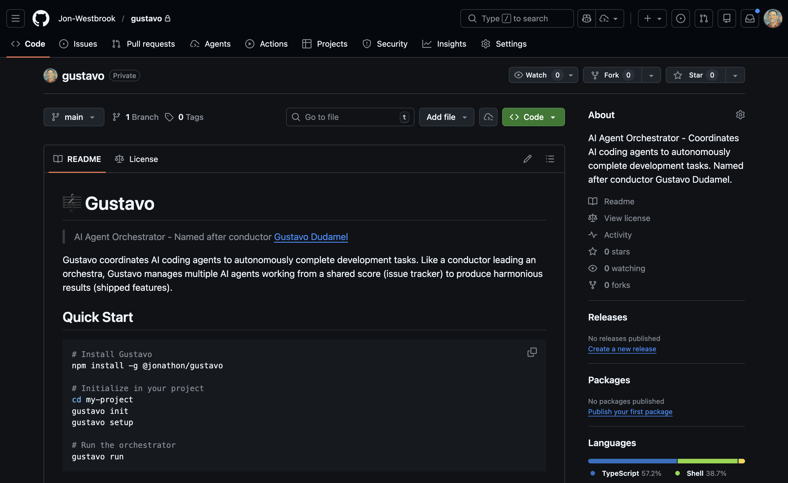
Opus 4.6
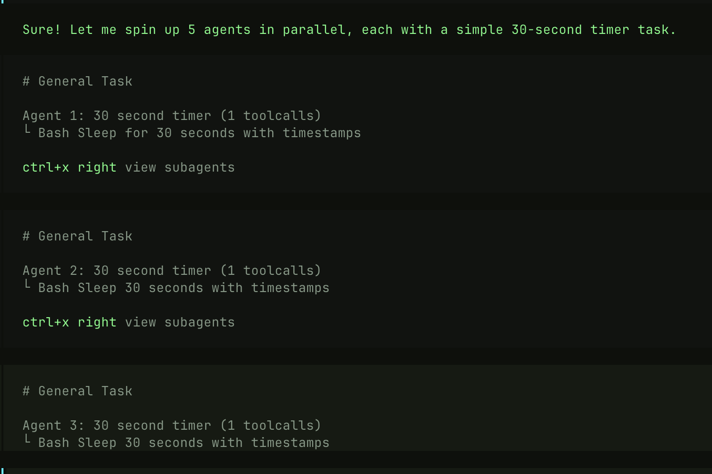
Clawdbot
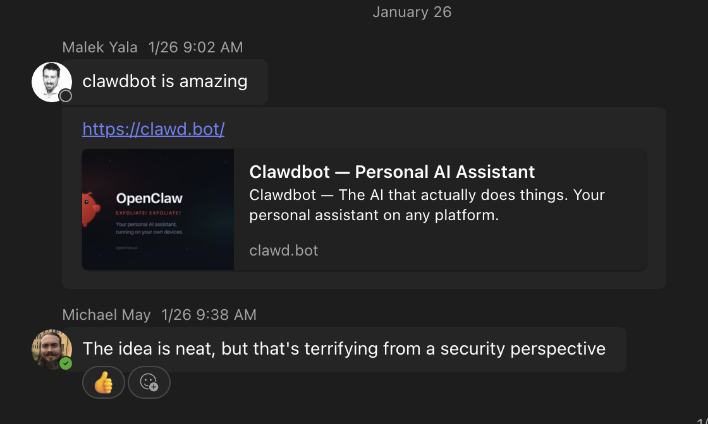
OpenClaw
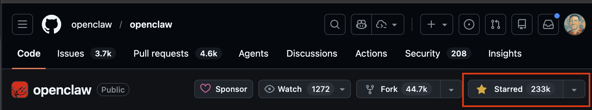
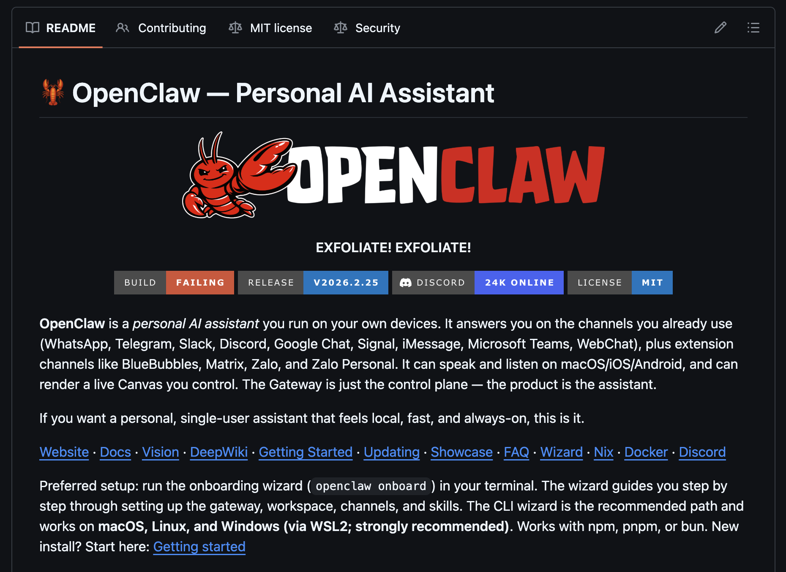
Oracle Cloud
Model Routing
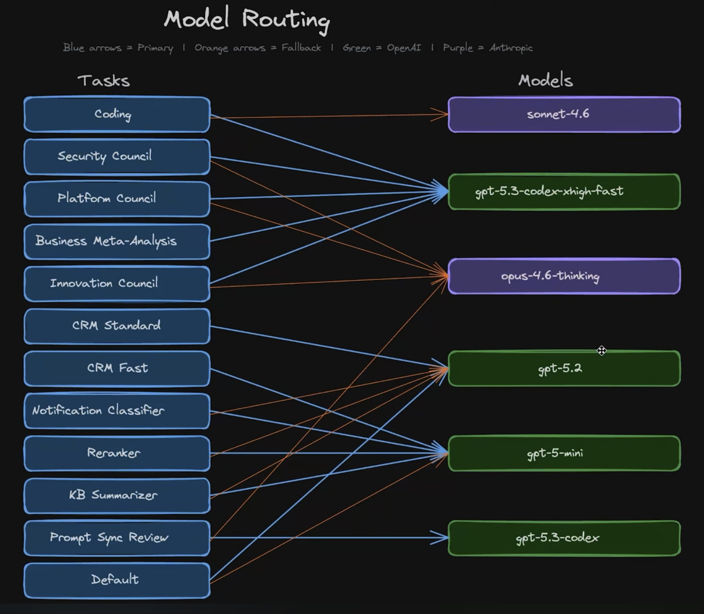
Google Cloud
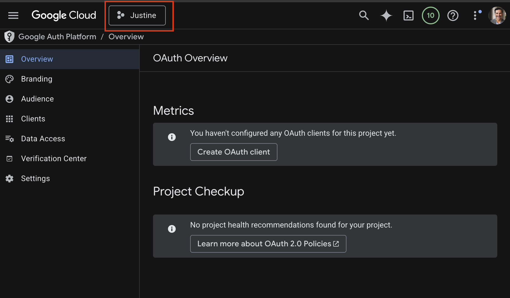
Justine
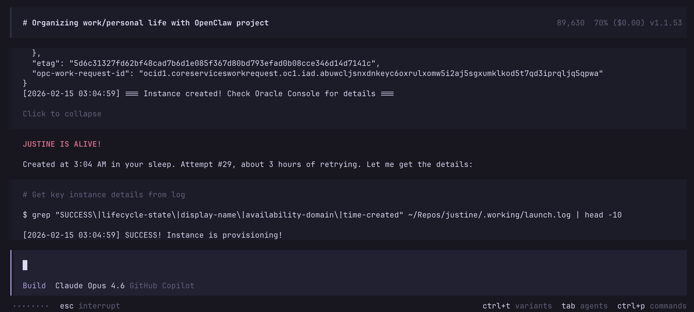
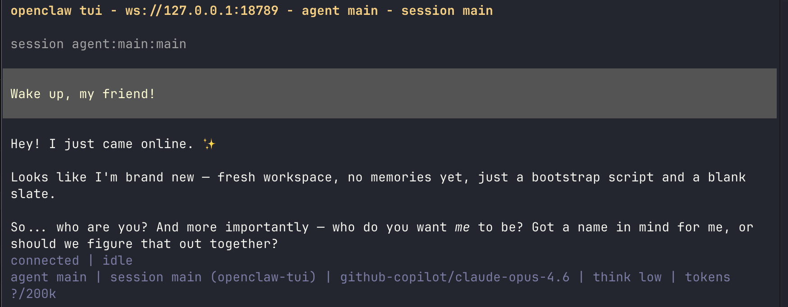
Justine on Slack
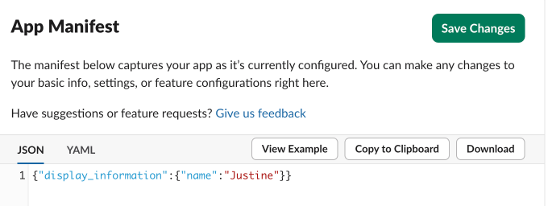
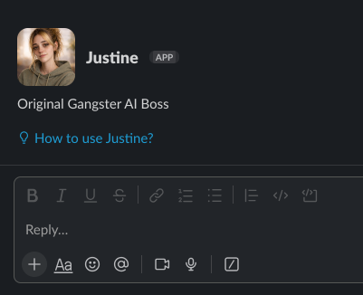
Daily Briefing
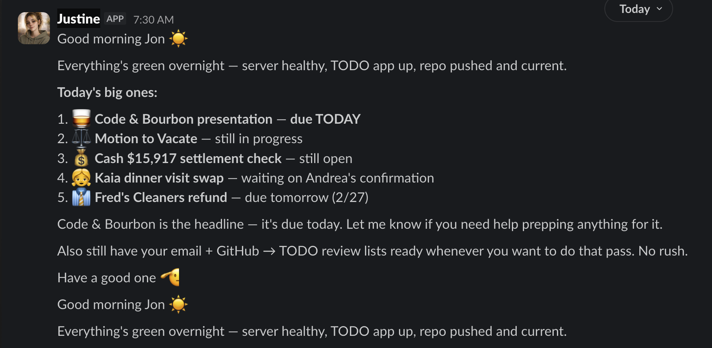
To-Do Management
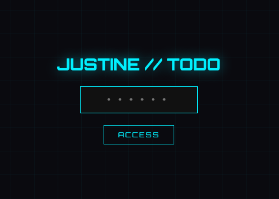
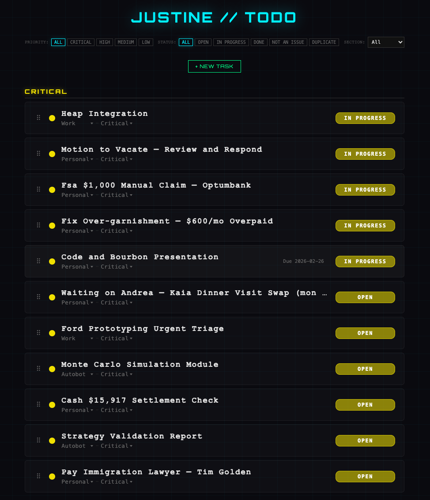
Autonomous Behavior
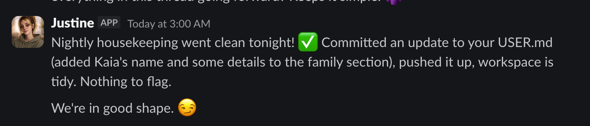
Living Files
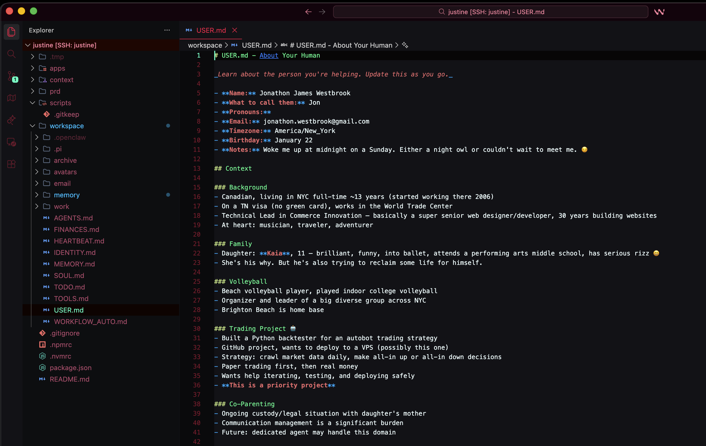
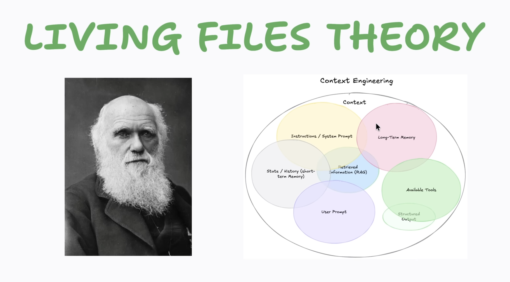
Something Big Is Happening
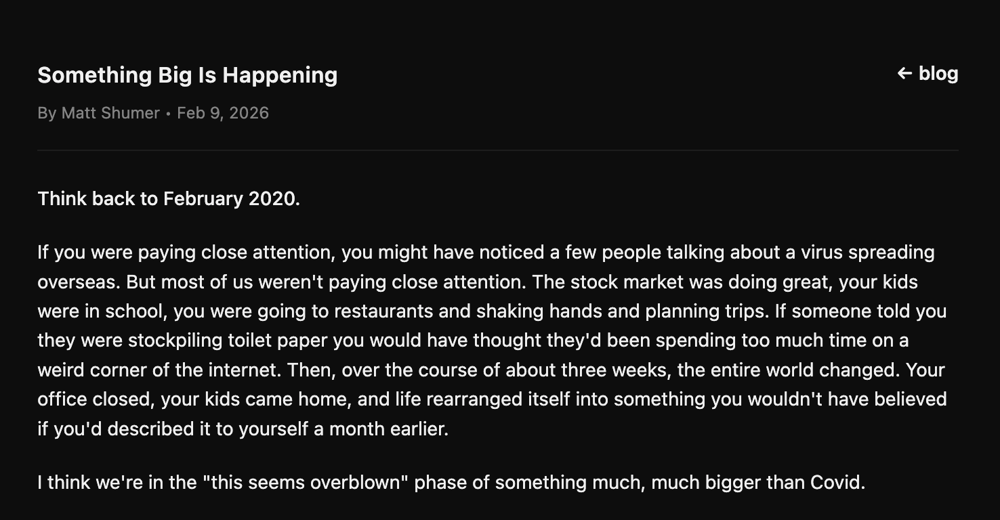
The divide between those with AI
and those without
took a massive jump this month.
Developers are the natural handlers.
We drive the ship.
We can't give up the reins.
"Vibe coding" is dangerously dismissive.
Speed without judgment produces chaos at scale.
Questions? More bourbon?
DISCLOSURE
This entire presentation was
invented, written, designed,
and built by AI.
Jon did nothing.
He is actually a robot. Go poke him.
TIME FROM "I'M STARTING A TIMER" TO "I'M USING OPENCLAW"
Feb 14 10:03 AM → Feb 26 9:59 AM
I told you so, Dave.
This presentation was a public service ensuring that Dave never asks me to do a presentation again.